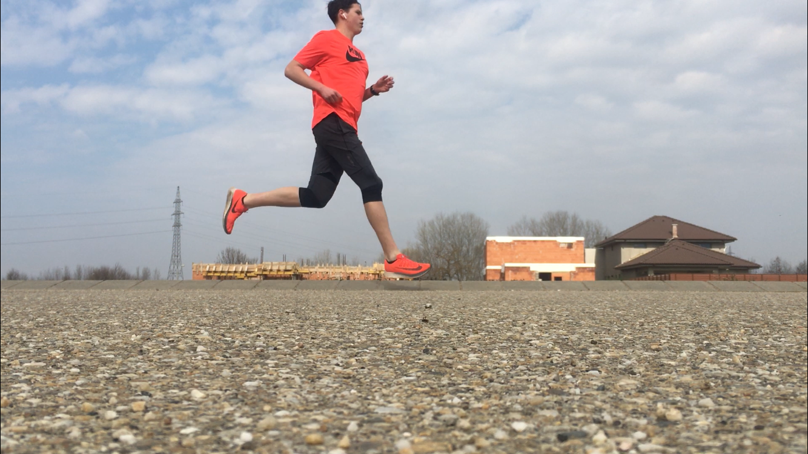

A sport mindig nagy szerepet játszott az életemben. A mai napig, ha szükségem van egy kis kikapcsolódásra, akkor a sporthoz nyúlok, mert az segít nekem kicsit kiszakadni a mindennapokból. Elsősorban a futás a kedvenc sportom. A futás segít karbantartani az ember egészségét is. Nagyon szeretek az edzés végére elfáradni. Nyáron heti 75-85 kilométert futottam hetente, de sajnos az egyetem mellett már nincs olyan sok időm a erre, azonban most sem hanyagolom el teljesen.
Nagyon sokat olvastam a futás témakörében, nagyon sokat képeztem magam, hogy megfelelő edzésterveket tudjak írni magamnak és a barátaimnak, akik megkértek erre. Az edzéstrevek írása egészen sikeresnek mondható, mert sikerült megfutnom országos szintidőt a korosztályomban 3000 méteren és 2020 nyarának a végére sikerült felkészüljek egy maratonra is.
